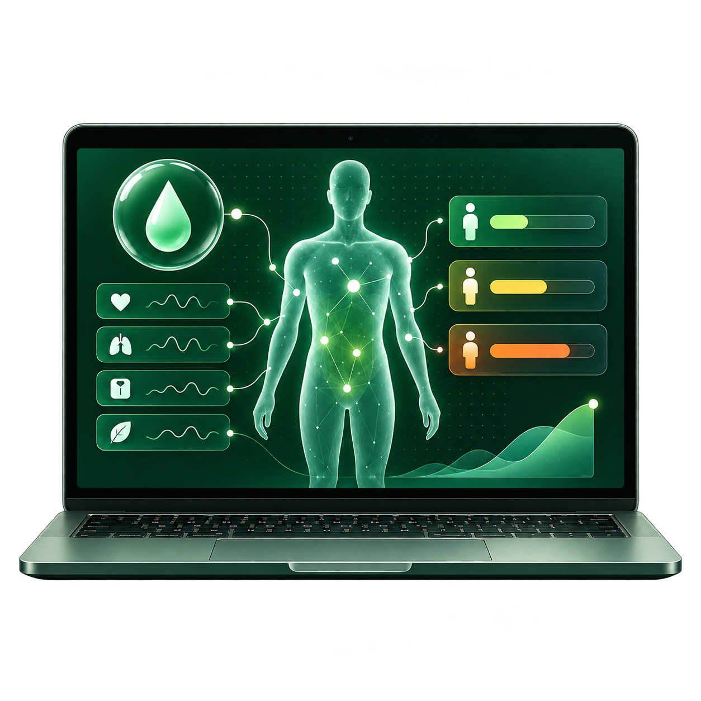

Diabetes IQ
Trained and evaluated binary and three-class LSTM and MLP models on 253,000 U.S. adult records across 21 health indicators. Then, built an interactive Flask application for exploring diabetes risk probabilities and visualization of how modifiable health factors affect predictions.